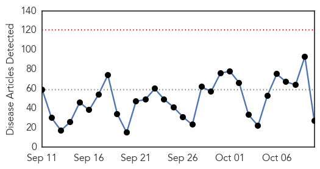
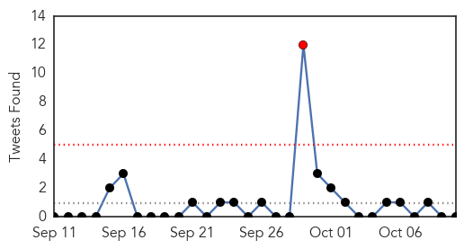
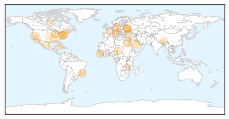
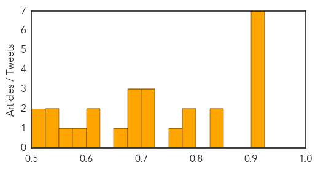

Toggle navigation
Early Warning
Daily Alerts
Unknown
Oct 10, 2015
Compare to:
-
Dengue Fever
Hemmorhagic Fever
Mold/Fungal Infection
Influenza
Meningitis
Pertussis / Whooping Cough
Middle East Respiratory Syndrome
Cholera
Hepatitis
Chikungunya
Yellow Fever
Bubonic Plague
West Nile Virus
Swine Flu
Ebola
Measles
Mumps
30 Day Trends
Web: 0
alerts
, 0
warnings
Twitter: 2
alerts
, 0
warnings
Top Articles:
0.924
Del. begins 2015-16 flu shot campaign
0.917
Chicago Tribune
0.917
Chicago Tribune
0.917
Chicago Tribune
0.917
Chicago Tribune
0.917
Chicago Tribune
0.917
Chicago Tribune
0.846
Hog farmers stay vigilant for PEDv swine virus
0.826
Div. of Public Health urges residents get flu shot as new flu season begins
0.794
Suspected Boko Haram suicide attacks kill dozens in Chad
0.794
Pre-election clashes erupt in Guinea
0.774
A Man with a Lifetime Medical Mission
0.722
Salmonella in Cucumbers Sickens 37 in Minnesota
0.719
Unvaccinated children in Ukraine at heightened risk of polio: UN agencies
0.703
PKK halts militant activity ahead of Turkey polls
0.695
Health groups slam Ukraine for slow polio response
0.687
CREUTZFELDT JAKOB DISEASE: An alarming presentation level II trauma center of Creutzfeldt-Jakob disease following a self-inflicted gunshot wound to the head
0.685
Thousands rally in Berlin against EU-US free trade deal
0.672
Boil Water Notice for Town of Florence
0.623
WAFB 9 News Baton Rouge, Louisiana News, Weather, Sports
0.618
Global Health Groups Slam Ukraine for Slow Response to Prevent the Spread of Polio
0.591
Tibet Après dix longues années de prison, l'écrivain Dolma Kyab, est libéré.
0.556
Health policies to be reviewed at NGC
0.538
Chilubi to conduct mass elephantiasis vaccination
0.531
What Selena Gomez's lupus diagnosis means for her career
0.516
Infections Possible Cause for Falls
0.502
Sarah Leo says Nain TB outbreak handled appropriately
Top Tweets:
0.727
No hay ese problema en el monte de Cayey.
0.607
RT: Ortografía: Decir "ayer" equivale a decir "en el día que precedió inmediatamente al de hoy". "El día de ayer" es una f…
Web/News Articles

Tweets

Article Locations

Article Confidences
